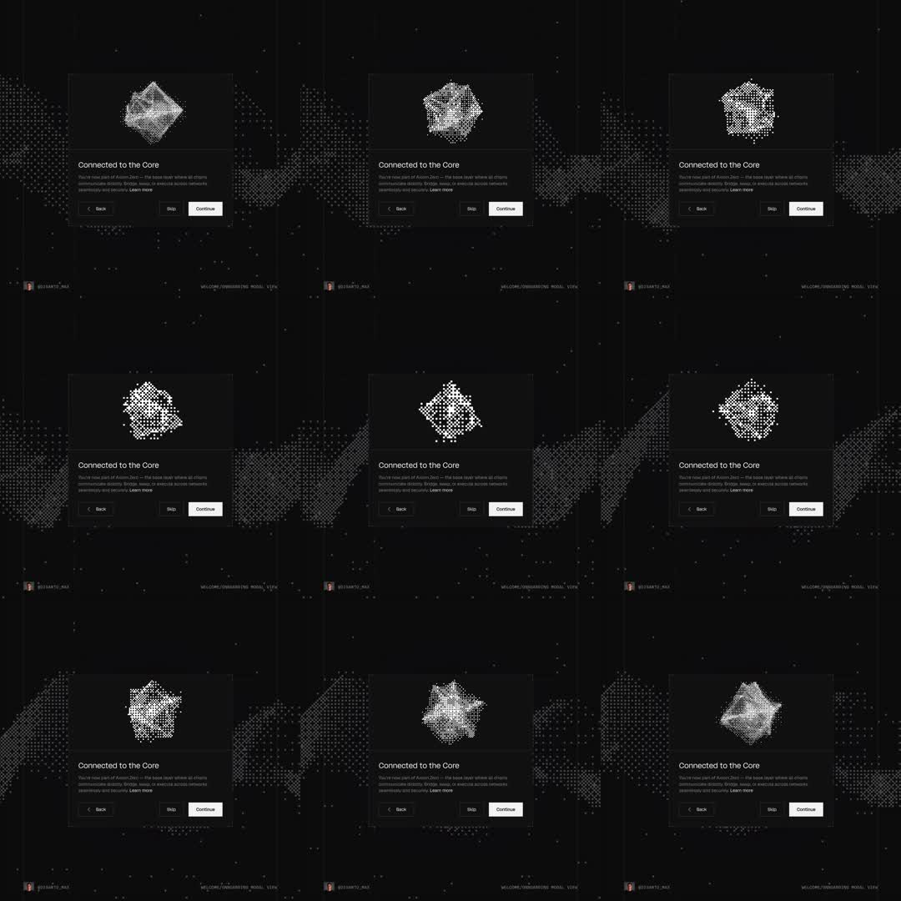

Onboarding modal on pure black: 'Connected to the Core' card whose hero is a rotating 3D wireframe/point-cloud cube (icosahedron-like mesh of glowing dots and edges), slowly tumbling; Back/Skip/Continue footer.
Media
Frame-by-frame

0-100%
Black scene with faint dotted wave mesh in the background corners; centered dark card: hero window with a luminous dot-matrix polyhedron tumbling on two axes (perspective-correct 3D), heading 'Connected to the Core', 2-line body, 'Learn more' link, footer Back / Skip / Continue (white). The mesh rotates continuously; dots shimmer with depth attenuation.
Build prompt
Rebuild this interaction 1:1: an onboarding modal on pure black - "Connected to the Core" card whose hero is a slowly tumbling 3D wireframe/point-cloud polyhedron (glowing dots and edges), with a dotted wave mesh in the background corners and a Back / Skip / Continue footer.
## Stack
React + TypeScript + Tailwind. Polyhedron on canvas/WebGL (Three.js or raw 2D projection): vertices as dots, edges as hairlines, perspective-correct rotation on two axes. Animate transform and opacity only for UI.
## Scene
Black scene with a faint dotted wave mesh drifting in the background corners. Centered dark card: hero window holding the luminous dot-matrix polyhedron; heading "Connected to the Core"; 2-line body; "Learn more" link; footer Back / Skip / Continue (Continue is white, others ghost).
## Motion spec
Pattern: ambient 3D rotation.
- Mesh rotation: ~8s/rev on X, ~12s/rev on Y, linear and continuous - a slow tumble, never resettling.
- Dots shimmer with depth attenuation (farther = smaller/dimmer); edges constant 1px at low opacity.
- Background dotted wave drifts slowly (30s+ cycle), independent of the mesh.
- Card and copy: perfectly still.
## Calibration
- Two-axis tumble at different periods (8s/12s) so the motion never visibly repeats.
- Depth attenuation on the dots is what makes it read 3D - uniform dots look like a flat pattern.
- Everything luminous sits at low opacity on black; this is a dark jewel, not a screensaver.
## Reduced motion
Mesh holds a static orientation; background wave frozen.
## Don't miss
- Points AND edges both render - dots alone lose the wireframe structure.
- The background wave is confined to corners/edges; it must never fight the hero mesh for attention.
- Footer hierarchy: Continue is the only filled button.
Mechanics
trigger
autoplay ambient
elements
modal card, 3D point-cloud polyhedron (canvas/WebGL), dotted wave background